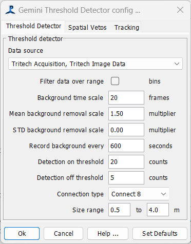
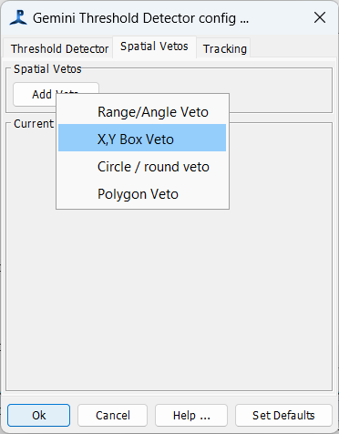
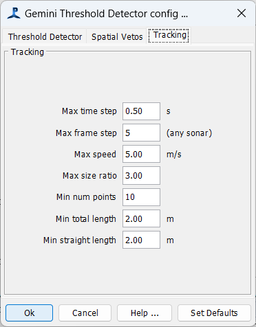

See Gillespie, D.; Hastie, G.; Montabaranom, J.; Longden, E.; Rapson, K.; Holoborodko, A.; Sparling, C. Automated Detection and Tracking of Marine Mammals in the Vicinity of Tidal Turbines Using Multibeam Sonar. J. Mar. Sci. Eng. 2023, 11, 2095. doi.org/10.3390/jmse11112095 for a description of how the detector works.



prevLink"> Previous: Tritech Displays